11.5 通用对话框：QMessageBox、QWizard
本节介绍通用对话框：QMessageBox、QWizard，并通过示例程序展示消息对话框和向导对话框的各自使用方法。
11.5.1 QMessageBox
QMessageBox 消息框一般作为模态对话框，告知用户信息、提供选项并接收用户反馈。消息框同时提供三种文本显示：primary
text（基本文本，必须有的，显示情况信息）、informative text（信息文本，向用户解释更多情况或提出问题）、detailed
text（详细文本，可选的，根据用户需要显示更多数据信息），这些文本都是用于提供信息给用户理解消息框提出的问题，用户理解后作出相应的选择。消
息框还提供图标和一系 列标准按钮，程序员根据需要设置图标和按
钮，用户点击按钮后，消息框返回用户点击的按钮数值。消息框可以使用自定义对象的方式，也可以直接调用定制好的静态函数弹窗。我们先介绍消息框的普通成员函数和其
主要属性，然后介绍静态函数。
（1）普通成员函数
QMessageBox 基类是 QDialog 对话框类，QMessageBox 构造函数如下：
QMessageBox(QWidget * parent = 0)
QMessageBox(Icon icon, const QString & title, const QString &
text, StandardButtons buttons = NoButton, QWidget * parent = 0,
Qt::WindowFlags f = Qt::Dialog | Qt::MSWindowsFixedSizeDialogHint)
第一个是默认构造函数，只有 parent 父窗口参数。第二个是带有详细参数的构造函数，参数 icon 是消息框显示的图标；title
是标题栏文本；text 是基本文本，显示展示给用户的信息内容；buttons 是消息框显示的按钮，可以通过 |
位或操作指定多个按钮，构造函数里的NoButton 是指不设置按钮，默认用 Ok 按钮；parent 是父窗口参数； f
是窗口标志位，Qt::Dialog 代表是对话框标志，窗口右上角没有最大化、最小化按钮，Qt::MSWindowsFixedSizeDialogHint
是指 Windows 的固定尺寸对话框的边框风格。
针对消息框的按钮使用，有多种添加、设置和访问函数。
首先是添加按钮函数：
void addButton(QAbstractButton * button,
ButtonRole role)
QPushButton * addButton(const QString & text,
ButtonRole role)
QPushButton * addButton(StandardButton button)
第一个添加按钮函数，参数为自定义的按钮对象指针，role 是按钮的角色类型。
第二个添加按钮函数，根据文本新建按钮添加到消息框，并返回新建的按钮对象指针。
第三个添加按钮函数，根据标志位数值，添加标准按钮，并返回新建的按钮对象指针。
按钮角色是枚举类型，具体如下表：
| QMessageBox::ButtonRole |
数值 |
描述 |
| QMessageBox::InvalidRole |
-1 |
不可用角色，该按钮不可用。 |
| QMessageBox::AcceptRole |
0 |
接收角色，点击该按钮导致对话框被接受，例如 OK 按钮。 |
| QMessageBox::RejectRole |
1 |
拒绝角色，点击该按钮导致对话框被拒绝，例如 Cancel 按钮。 |
| QMessageBox::DestructiveRole |
2 |
放弃角色，点击该按钮导致放弃变更并关闭对话框，例如 放弃变更、不保存就退出。 |
| QMessageBox::ActionRole |
3 |
动作角色，点击该按钮导致对话框元素做变动动作。 |
| QMessageBox::HelpRole |
4 |
帮助角色，点击该按钮请求帮助。 |
| QMessageBox::YesRole |
5 |
同意角色，表示 Yes 意思的按钮。 |
| QMessageBox::NoRole |
6 |
否定角色，表示 No 意思的按钮。 |
| QMessageBox::ApplyRole |
8 |
应用角色，应用当前的变更操作。 |
| QMessageBox::ResetRole |
7 |
重置角色，将对话框元素重置为默认值。 |
点击不同角色的按钮，对话框的动作不同，并且影响对话框返回值，要根据实际需要配置按钮角色。
消息框定义了很多标准按钮，可以通过 | 位或运算符设置多个标准按钮，标准按钮的标志位如下表所示：
| QMessageBox::StandardButtons |
数值 |
描述 |
| QMessageBox::Ok |
0x00000400 |
OK 按钮，定义为 AcceptRole 角色。 |
| QMessageBox::Open |
0x00002000 |
Open 按钮，定义为 AcceptRole 角色。 |
| QMessageBox::Save |
0x00000800 |
Save 按钮，定义为 AcceptRole 角色。 |
| QMessageBox::Cancel |
0x00400000 |
Cancel 按钮，定义为 RejectRole 角色。 |
| QMessageBox::Close |
0x00200000 |
Close 按钮，定义为 RejectRole 角色。 |
| QMessageBox::Discard |
0x00800000 |
Discard 或 Don't Save 按钮，依赖系统平台，定义为 DestructiveRole 角色。 |
| QMessageBox::Apply |
0x02000000 |
Apply 按钮，定义为 ApplyRole 角色。 |
| QMessageBox::Reset |
0x04000000 |
Reset 按钮，定义为 ResetRole 角色。 |
| QMessageBox::RestoreDefaults |
0x08000000 |
Restore Defaults 按钮，定义为 ResetRole 角色。 |
| QMessageBox::Help |
0x01000000 |
Help 按钮，定义为 HelpRole 角色。 |
| QMessageBox::SaveAll |
0x00001000 |
Save All 按钮，定义为 AcceptRole 角色。 |
| QMessageBox::Yes |
0x00004000 |
Yes 按钮，定义为 YesRole 角色。 |
| QMessageBox::YesToAll |
0x00008000 |
Yes to All 按钮，定义为 YesRole 角色。 |
| QMessageBox::No |
0x00010000 |
No 按钮，定义为 NoRole 角色。 |
| QMessageBox::NoToAll |
0x00020000 |
No to All 按钮，定义为 NoRole 角色。 |
| QMessageBox::Abort |
0x00040000 |
Abort 按钮，定义为 RejectRole 角色。 |
| QMessageBox::Retry |
0x00080000 |
Retry 按钮，定义为 AcceptRole 角色。 |
| QMessageBox::Ignore |
0x00100000 |
Ignore 按钮，定义为 AcceptRole 角色。 |
| QMessageBox::NoButton |
0x00000000 |
不可用按钮 |
根据标志位，可以一次设置多个标准按钮，如下函数：
void setStandardButtons(StandardButtons
buttons) //设置标准按钮
StandardButtons standardButtons()
const //获取设置好的标准按钮标志位
StandardButton standardButton(QAbstractButton * button)
const //根据按钮对象指针获取按钮对应的标准按钮标志位
setStandardButtons() 函数根据参数里标志位一次设置多个按钮，standardButtons() 则返回设置好的按钮标志位。
standardButton() 是根据参数里的按钮对象指针，返回该按钮对应的标准按钮标志位，如果对象不是标准按钮，返回
QMessageBox::NoButton 。
注意不要调用 msgBox.setStandardButtons(QMessageBox::NoButton) ，消息框显示时会没有任何按钮，消息框可能
出现关不掉的情况，程序界面会卡住无法操作，一般默认用 QMessageBox::Ok 按钮即可。
按钮角色可以读取，如下函数：
ButtonRole buttonRole(QAbstractButton *
button) const
按钮角色得在添加按钮 addButton() 时指定，目前没有直接修改按钮角色的函数。
从消息框卸载按钮使用如下函数：
void removeButton(QAbstractButton *
button)
注意 removeButton() 函数只是将消息框的按钮卸下，并不会删除该按钮对象。
如果需要修改按钮角色，可以先卸载按钮，再用新的角色添加给消息框。
获取消息框已设置的所有按钮对象列表，使用如下函数：
QList<QAbstractButton *> buttons()
const
当消息框有多个按钮时，可以指定默认按钮（默认对应 Enter 键）、退出按钮（对应 Esc/Escape 键），如下函数：
void setDefaultButton(QPushButton *
button) //根据按钮指针设置默认按钮
void setDefaultButton(StandardButton button)
//根据标准按钮标志位设 置默认按钮
QPushButton * defaultButton() const
//获取默认按钮对象指针
void setEscapeButton(QAbstractButton *
button) //根据按钮指针设置退出按钮
void setEscapeButton(StandardButton
button) //根据标准按钮标志位设置退出按钮
QAbstractButton * escapeButton()
const
//获取退出按钮对象指针
注意检查参数和返回值的有效性，避免操作空指针。
根据用户的操作，可以获取用户点击的按钮对象，或者返回 0 （NULL）：
QAbstractButton * clickedButton() const
用户如果点击了按钮，就返回点击的按钮对象；如果没有设置退出键时用户按下键盘 Esc 键，返回 0 。
在未调用 exec() 显示消息框时， clickedButton() 也返回 0 。
消息框还可以添加一个复选框，比如用于设置是否在文件关闭前自动保存修改内容，注意复选框对象要自己新建，消息框默认并没有复选框。设置和获取复选框 对象函数如
下：
QCheckBox * checkBox()
const //获取复选框对象指针，默认为 NULL
void setCheckBox(QCheckBox * cb) //手动新建复选框对象
cb，添加给消息框
checkBox() 默认是 NULL，消息框自己不会创建复选框，必须自己手动新建一个复选框对象，用setCheckBox( cb )
函数设置复选框对象。
一个典型的消息框对象使用如下代码示例：
QMessageBox msgBox;
msgBox.setText(tr("文本已经修改。")); //基本文本设置
msgBox.setInformativeText(tr("是否保存修改后的文本？"));
//信息文本设置
msgBox.setDetailedText(tr("勾选上面复选框，设置总是自动保存修改的文本。")); //详细文本设置
msgBox.setStandardButtons(QMessageBox::Save |
QMessageBox::Discard | QMessageBox::Cancel);
msgBox.setDefaultButton(QMessageBox::Save);
//补充复选框
QCheckBox *pCheckBox = new
QCheckBox(tr("关闭前总是自动保存修改文本。"));
msgBox.setCheckBox(pCheckBox);
int ret = msgBox.exec();
if(NULL != msgBox.checkBox())
{
bool bAlwaysSave =
msgBox.checkBox()->isChecked();
if(bAlwaysSave)
{
qDebug()<<tr("关闭前总是自动保存修改文本。");
}
else
{
qDebug()<<tr("关闭前不自动保存修改文本。");
}
}
显示效果如下图所示：
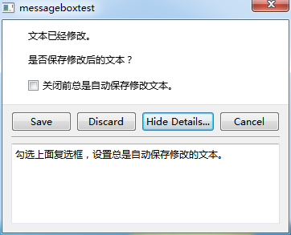
消息框第一行显示的是基本文本，第二行是信息文本，当设置了详细文本后，消息框自动添加“Show Details”按钮，点击该按钮就会展开下方的文本框显示详
细文本。
添加复选框之后，复选框显示在第三行，可以访问复选框对象，获取用户是否选中了复选框，以进行后续操作。
消息框的三种文本访问和设置函数如下：
QString text() const //获取基本文
本
void setText(const QString & text) //设置基本文本
QString informativeText() const //获取信息文本
void setInformativeText(const QString &
text) //设置信息文本
QString detailedText() const
//获取详细文本
void setDetailedText(const QString &
text) //设置详细文本
设置详细文本后，消息框自动添加“Show Details”按钮，如果没有设置详细文本，消息框就没有“Show Details”按钮。
消息框文本可以设置文本格式，如下函数：
Qt::TextFormat textFormat()
const //获取文本格式
void setTextFormat(Qt::TextFormat format)
//设置文本格式
Qt::TextFormat 枚举类型内容比较简单，三种取值如下表所示：
| Qt::TextFormat 枚举常量 |
数值 |
描述 |
| Qt::PlainText |
0 |
设置的文本理解为纯文本，不解析 HTML 语法。 |
| Qt::RichText |
1 |
设置的文本理解为丰富文本，按照 HTML 语法解析呈现内容。 |
| Qt::AutoText |
2 |
自动判断文本类型，如果 Qt::mightBeRichText() 函数返回 true，当做丰富文本呈现，否则都当成纯文本。 |
默认文本格式为 Qt::AutoText ，自动判断设置文本类型。
注意 setTextFormat() 函数只影响基本文本，不影响信息文本和详细文本。
信息文本默认总是自动文本格式 Qt::AutoText，详细文本默认总是纯文本格式 Qt::PlainText。
消息框的文本还可以设置文本交互操作的标志位，如下函数：
Qt::TextInteractionFlags
textInteractionFlags() const
//获取文本交互标志位，默认值依赖 style 风格
void setTextInteractionFlags(Qt::TextInteractionFlags
flags) //设置文本交互标志位
Qt::TextInteractionFlags 标志位定义文本的交互性，比如是否可以复制，是否可以编辑，如下表所示：
- setTextInteractionFlags() 只影响基本文本，不影响信息文本和详细文本。
消息框除了显示文本，还可以选择图标配合显示，表示消息的类别，比如普通消息、警告消息、严重错误消息等类型。
图标支持使用 QMessageBox 自带图标或者自定义图标，如下函数：
void setIcon(Icon)
//设置 QMessageBox 自带的图标
Icon icon() const //获取所用的
QMessageBox 自带图标
void setIconPixmap(const QPixmap &
pixmap) //设置自定义图片作为图标
QPixmap iconPixmap() const //获取设置的自定义图标的图片
默认情况下， iconPixmap() 是空的 null ，没有自定义图片文件。如果需要用自定义图片，根据图片文件名构建 QPixmap
对象，设置给消息框即可。
icon() 默认情况下返回 0，就是 QMessageBox::NoIcon ，QMessageBox 自带的图标如下表所示：
| QMessageBox::Icon 枚举类型 |
数值 |
描述 |
图标示例 |
| QMessageBox::NoIcon |
0 |
消息框没有任何图标。 |
无 |
| QMessageBox::Question |
4 |
询问图标，说明提示的消息是向用户询问。 |
|
| QMessageBox::Information |
1 |
信息图标，说明提示的消息是告诉用户信息。 |
|
| QMessageBox::Warning |
2 |
警告图标，说明提示的消息是警告信息，但目前程序能够处理。 |
|
| QMessageBox::Critical |
3 |
严重错误图标，说明程序发生了严重错误，很可能崩溃。 |
|
上表图标示例仅供参考，实际运行时图标依赖系统平台的风格，不同操作系统显示图标不一样。
消息框还可以修改窗口标题栏文本，设置模态或非模态显示，如下函数设置：
void setWindowTitle(const QString &
title) //设置消息框标题栏文本
QString windowTitle()
const //获取消息框标题栏文本
void setWindowModality(Qt::WindowModality
windowModality) //设置消息框显示模态类型
Qt::WindowModality windowModality() const
//获取消息框的显示模态类型
窗口的显示模态类型见 11.1.1 节QWidget 类的介绍，主要就是非模态 Qt::NonModal、Qt::WindowModal
窗口级模态、Qt::ApplicationModal 应用级模态三种。
消息框还有一个特别的 open() 函数，可以指定接受信号的对象和槽函数：
void open(QObject * receiver, const char
* member)
该函数打开消息框，并将 finished() 或 buttonClicked() 信号关联到参数里对象槽函数，如果槽函数有一个指针参数，那么关联
buttonClicked() 信号，否则关联 finished() 信号到槽函数。
注意消息窗口关闭后，自动解除信号和 open() 参数里对象的槽函数关联。
消息框类本级的槽函数只有 1 个，如下函数：
virtual int exec() //模态显示消息框
消息框类本级的信号也只有 1 个，如下信号：
void buttonClicked(QAbstractButton *
button) //点击按钮信号，参数里是被点击的按钮对象
消息框主要从基类 QDialog 和 QWidget 继承各种信号和槽函数，详见 11.1 节和 11.2 节内容。
（2）静态成员函数
消息框可以通过定义对象、调用普通成员函数方式使用，也可以通过最简单的静态成员函数来使用。
静态成员函数仅需一句代码即可完成调用，非常便捷。
针对询问、信息、警告、严重错误四种情况，对应的静态成员函数如下：
StandardButton question(QWidget *
parent, const QString & title, const QString & text,
StandardButtons buttons = StandardButtons( Yes | No ), StandardButton
defaultButton = NoButton)
StandardButton information(QWidget * parent, const
QString & title, const QString & text, StandardButtons buttons =
Ok, StandardButton defaultButton = NoButton)
StandardButton warning(QWidget * parent, const QString
& title, const QString & text, StandardButtons buttons = Ok,
StandardButton defaultButton = NoButton)
StandardButton critical(QWidget * parent, const QString
& title, const QString & text, StandardButtons buttons = Ok,
StandardButton defaultButton = NoButton)
上面静态函数的参数都很类似，title 是标题文本，text 是基本文本，buttons 是设置的标准按钮，询问时为 Yes 和 No
按钮，其他情况默认为 Ok 按钮，defaultButton 默认 NoButton；返回值就是用户点击的标准按钮数值。
静态函数调用非常简单，如下示例：
int ret = QMessageBox::warning(this, tr("My Application"),
tr("The document has been modified.\n"
"Do you want to save your changes?"),
QMessageBox::Save | QMessageBox::Discard
| QMessageBox::Cancel,
QMessageBox::Save);
窗口标题文本 "My Application"，基本文本 "The document has been modified.\nDo you want
to save your changes?" ，显示三个按钮 Save 、Discard、Cancel，默认焦点是 Save 按钮。
另外，消息框还提供了两个用于显示本程序信息和 Qt 版本信息的静态函数：
void about(QWidget * parent, const
QString & title, const QString & text)
void aboutQt(QWidget * parent, const QString & title
= QString())
about() 函数用于显示本程序的信息，title 是标题栏文本，text 一般为自定义的本程序介绍文本，比如 "某某软件 1.0
版本，版权归某某所有。"
aboutQt() 函数显示关于所用 Qt 版本的信息，title 是窗口标题文本，窗口内的消息文本是 Qt 自行设置的，包括 Qt
版本信息、许可证信息等等。
QMessageBox 类的内容介绍到这，下面我们通过一个简单文本编辑器示例熟悉消息框的使用。
我们打开 QtCreator，新建一个 Qt Widgets Application 项目，在新建项目的向导里填写：
①项目名称 simpletextedit，创建路径 D:\QtProjects\ch11，点击下一步；
②套件选择里面选择全部套件，点击下一步；
③基类选择 QWidget，注意修改主窗口类名为 WidgetSimpleTextEdit，然后点击下一步；
④项目管理不修改，点击完成。
由于使用 Qt 通用对话框，就不再需要额外新建自己的子窗口类和UI文件。
我们打开 widgetsimpletextedit.ui 界面文件，拖入控件：
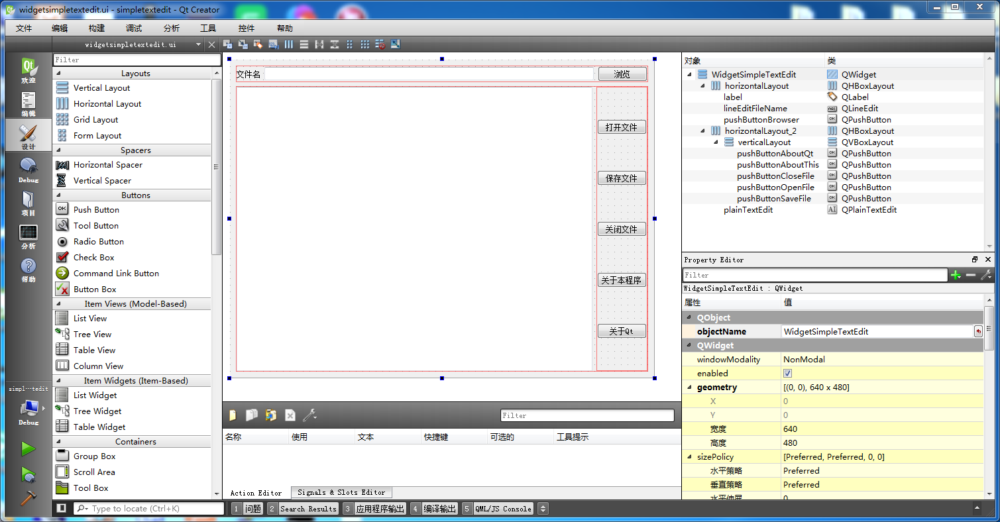
第一行控件是“文件名”标签，单行编辑器 lineEditFileName，“浏览”按钮 pushButtonBrowser。
第二行是纯文本编辑器 plainTextEdit，编辑器右侧还有 5 个按钮，
“打开文件”按钮 pushButtonOpenFile，“保存文件”按钮 pushButtonSaveFile，“关闭文件”按钮
pushButtonCloseFile，“关于本程序”按钮 pushButtonAboutThis，“关于Qt”按钮
pushButtonAboutQt。
第一行控件按照水平布局器排列，第二行先将右边 5 个按钮按照垂直布局器排列，再与纯文本编辑器一起按水平布局器排列。窗口整体按照垂直布局器排列，窗口大小
640 * 480 。
完成界面布局后，依次右击节目 6 个按钮，为按钮添加 clicked() 信号的槽函数。
然后右击纯文本编辑器 plainTextEdit ，为纯文本编辑器添加 textChanged() 信号的槽函数。
槽函数添加完成后，我们保存并关闭 ui 文件，回到代码编辑界面。
我们首先编辑头文件 widgetsimpletextedit.h 内容：
#ifndef
WIDGETSIMPLETEXTEDIT_H
#define WIDGETSIMPLETEXTEDIT_H
#include <QWidget>
#include <QFile>
#include <QFileDialog>
namespace Ui {
class WidgetSimpleTextEdit;
}
class WidgetSimpleTextEdit : public QWidget
{
Q_OBJECT
public:
explicit WidgetSimpleTextEdit(QWidget *parent = 0);
~WidgetSimpleTextEdit();
private slots:
void on_pushButtonBrowser_clicked();
void on_pushButtonOpenFile_clicked();
void on_pushButtonSaveFile_clicked();
void on_pushButtonCloseFile_clicked();
void on_pushButtonAboutThis_clicked();
void on_pushButtonAboutQt_clicked();
void on_plainTextEdit_textChanged();
private:
Ui::WidgetSimpleTextEdit *ui;
//文件对象
QFile m_file;
//保存文本是否被修改的状态
bool m_bTextIsChanged;
//根据编辑框内容写入文件
void SaveTextFile();
};
#endif // WIDGETSIMPLETEXTEDIT_H
我们添加了 QFile 和 QFileDialog 的头文件引用。
在类内容，6 个按钮的槽函数和纯文本编辑器的槽函数是通过界面编辑操作添加的。
然后手动添加了成员文件对象 m_file，标志位 m_bTextIsChanged 表示文本是否被修改。
添加了函数 SaveTextFile() ，用于将编辑器内容写入到文件中。
接下来我们分段编辑源文件 widgetsimpletextedit.cpp 内容，首先是头文件包含和构造函数：
#include "widgetsimpletextedit.h"
#include "ui_widgetsimpletextedit.h"
#include <QDebug>
#include <QMessageBox>
WidgetSimpleTextEdit::WidgetSimpleTextEdit(QWidget *parent) :
QWidget(parent),
ui(new Ui::WidgetSimpleTextEdit)
{
ui->setupUi(this);
//保存文本是否被修改的状态
m_bTextIsChanged = false;
}
添加了 QDebug 和 QMessageBox 头文件包含。
在构造函数里面添加了初始化代码，m_bTextIsChanged 默认为 false。
然后是析构函数代码：
WidgetSimpleTextEdit::~WidgetSimpleTextEdit()
{
//判断文本修改状态
if( m_bTextIsChanged )
{
//提示用户保存修改后的文本
int nRet = QMessageBox::question(this, tr("保存文件询问"),
tr("是否保存文件编辑的内容？"),
QMessageBox::Yes|QMessageBox::No,
QMessageBox::Yes);
if( QMessageBox::Yes == nRet )
{
//保存一下文件
SaveTextFile();
}
}
//关闭文件
m_file.close();
//清空编辑框
ui->plainTextEdit->clear();
//删除界面
delete ui;
}
在析构函数里，我们添加了对 m_bTextIsChanged 标志位的检查，如果为 true，说明文本修改了但未保存，
弹出消息框提示用户是否需要保存文件编辑内容，如果用户选择 Yes 按钮，那么调用 SaveTextFile() 保存文件。
然后关闭文件，清空纯文本编辑器，最后删除界面。
接下来是“浏览”按钮对应槽函数代码：
//浏览文件
void WidgetSimpleTextEdit::on_pushButtonBrowser_clicked()
{
//文件名
QString strFileName;
strFileName = QFileDialog::getOpenFileName(this, tr("选择文本文件"), tr(""),
tr("Text files (*.txt);;All files (*)"));
if(strFileName.isEmpty())
{
//没有文件名
return;
}
//正常文件名
ui->lineEditFileName->setText(strFileName);
}
该函数先定义字符串对象 strFileName，然后调用 QFileDialog::getOpenFileName() 获取要打开的文件名，
然后判断文件名是否为空，如果为空就不处理返回；
文件名不为空，就将获取的文件名显示到文件名编辑器里。
接下来是“打开文件”按钮对应槽函数代码：
//打开文件
void WidgetSimpleTextEdit::on_pushButtonOpenFile_clicked()
{
//获取文件名
QString strFileName = ui->lineEditFileName->text().trimmed();
//判断文件名是否为空
if( strFileName.isEmpty() )
{
QMessageBox::warning(this, tr("文件名检查"), tr("文件名为空，请先浏览选择文本文件。"));
return;
}
//判断文本修改状态
if( m_bTextIsChanged )
{
//提示用户保存修改后的文本
int nRet = QMessageBox::question(this, tr("保存文件询问"),
tr("是否保存上一个文件编辑的内容？"),
QMessageBox::Yes|QMessageBox::No,
QMessageBox::Yes);
if( QMessageBox::Yes == nRet )
{
//保存一下文件
SaveTextFile();
}
}
//关闭旧文件
m_file.close();
//清空编辑框
ui->plainTextEdit->clear();
//尝试打开文件
m_file.setFileName( strFileName );
bool bRet = m_file.open( QIODevice::ReadWrite|QIODevice::Text );
//判断是否打开
if( ! bRet )
{
//没有打开，报错
QMessageBox::warning(this, tr("文件打开报错"),
tr("指定文件无法打开，请检查文件是否存在，是否有读写权限。"));
//没有文件，没有编辑
m_bTextIsChanged = false;
//修改保存按钮文本，不带 *
ui->pushButtonSaveFile->setText(tr("保存文件"));
return;
}
//文件成功打开
QByteArray baData = m_file.readAll();
//转为 QString
QString strText = QString::fromLocal8Bit(baData);
//显示到文本编辑器
ui->plainTextEdit->setPlainText(strText);
//修改标记位，新文件，还没有编辑
m_bTextIsChanged = false;
//修改保存按钮文本，不带 *
ui->pushButtonSaveFile->setText(tr("保存文件"));
return;
}
该函数先从单行编辑器获取文件名，并判断文件名是否为空，如果为空，弹出消息框提示用户文件名为空 并返回；
如果文件名非空，继续后面操作。
检查 m_bTextIsChanged 标志位是否为真，如果为真，说明上一个文件修改了但没有保存，
弹出消息框询问用户，是否保存上一个文件编辑内容，如果用户点击 Yes 就保存上一个文件。
然后关闭上一个文件，清空纯文本编辑器。
设置新文件名给文件对象，然后尝试以 QIODevice::ReadWrite|QIODevice::Text 模式打开文本文件，
如果打开失败，就重置 m_bTextIsChanged 为 false，并重置“保存文件”按钮文本，然后返回。
如果打开文件成功，将文件所有内容读取到 baData，然后转为 QString 类型，存到 strText 。
将 strText 设置给纯文本编辑器显示，并重置 m_bTextIsChanged 为 false，并重置“保存文件”按钮文本。
这里说明一下，当文本发生修改时，保存文件按钮显示“保存文件*”字样（多个 * 提示），其他时候显示“保存文件”。
接下来我们编写实际写入文件内容的 SaveTextFile() 函数：
//根据编辑框内容写入文件
void WidgetSimpleTextEdit::SaveTextFile()
{
//获取文本
QString strText = ui->plainTextEdit->toPlainText();
//转为本地字节数组
QByteArray baData = strText.toLocal8Bit();
//保存文件
if( m_file.isOpen() )
{
//文件是打开的
m_file.resize(baData.size()); //设置文件大小
m_file.reset(); //光标移动到开头位置
m_file.write(baData);
//修改标记位
m_bTextIsChanged = false;
//修改保存按钮文本，不带 *
ui->pushButtonSaveFile->setText(tr("保存文件"));
}
}
该函数先从纯文本编辑器获取纯文本，存到 strText，然后转为本地字节数组 baData。
判断文件对象是否正常打开状态，如果是打开的，重新设置文件大小为 baData 数组的大小，
然后移动读写光标到文件开头，写入 baData 数组。
然后重置 m_bTextIsChanged 为 false，并重置“保存文件”按钮文本。
接下来是“保存文件”按钮对应槽函数代码：
//保存文件
void WidgetSimpleTextEdit::on_pushButtonSaveFile_clicked()
{
//判断标志位
if( m_bTextIsChanged )
{
//保存文件内容
SaveTextFile();
}
}
该函数比较简单，判断 m_bTextIsChanged 标志位，为真时调用 SaveTextFile() 保存文件；如果标志位为假，就不处理。
接下来是“关闭文件”按钮对应槽函数代码：
//关闭文件
void WidgetSimpleTextEdit::on_pushButtonCloseFile_clicked()
{
//判断标志位
if( m_bTextIsChanged )
{
//有修改文件
QMessageBox msgBox;
msgBox.setText(tr("文本已修改。"));
msgBox.setInformativeText(tr("您希望保存到文件吗？"));
msgBox.setIcon( QMessageBox::Question );
//三个按钮
msgBox.setStandardButtons(QMessageBox::Save | QMessageBox::Discard | QMessageBox::Cancel);
msgBox.setDefaultButton(QMessageBox::Save);
int nRet = msgBox.exec();
//判断返回值，分别处理
switch (nRet) {
case QMessageBox::Save:
//保存文件
SaveTextFile();
break;
case QMessageBox::Discard:
//不保存，在后面代码关闭文件
break;
case QMessageBox::Cancel:
return; //取消关闭文件
break;
default:
return; //取消关闭文件
break;
}
}
//关闭文件
m_file.close();
//清空编辑器
ui->plainTextEdit->clear();
//没有文件，没有编辑
m_bTextIsChanged = false;
//修改保存按钮文本，不带 *
ui->pushButtonSaveFile->setText(tr("保存文件"));
}
该函数先判断 m_bTextIsChanged 标志位，如果为真，说明文件修改了尚未保存，
定义消息框对象 msgBox，设置基本文本、信息文本、询问图标，
设置三个按钮 Save、Discard 、Cancel ，分别代表保存修改、丢弃修改、取消关闭操作。
默认按钮为 Save，然后弹出模态消息框，根据用户点击结果判断：
msgBox 返回值如果为 Save，调用 SaveTextFile() 保存文件；
如果为 Discard，就跳到后面代码，在 switch 后面关闭文件；
如果为 Cancel 或默认情况，均直接返回，不进行后续关闭操作。
switch 后面代码先关闭文件，清空纯文本编辑器，
重置 m_bTextIsChanged 为 false，并重置“保存文件”按钮文本。
接下来是“关于本程序”按钮对应槽函数代码：
//关于本程序
void WidgetSimpleTextEdit::on_pushButtonAboutThis_clicked()
{
QMessageBox::about(this, tr("关于本程序"),
tr("简单文本编辑器 1.0"));
}
该函数就是简单显示本程序信息，标题栏是 "关于本程序"，窗口内文本是 "简单文本编辑器 1.0" 。
接下来是“关于Qt”按钮对应槽函数代码：
//关于Qt
void WidgetSimpleTextEdit::on_pushButtonAboutQt_clicked()
{
QMessageBox::aboutQt(this, tr("关于Qt"));
}
这个函数更简单，只设置消息框标题，内容由 aboutQt() 函数自动填充，显示 Qt 版本和许可证等信息。
最后是纯文本编辑器控件的文本修改信号对应的槽函数：
//文本修改变化
void WidgetSimpleTextEdit::on_plainTextEdit_textChanged()
{
//文本已修改
m_bTextIsChanged = true;
//修改保存按钮文本，带 *
ui->pushButtonSaveFile->setText(tr("保存文件*"));
}
该函数先修改 m_bTextIsChanged 为 true，然后设置保存文件按钮文本为 "保存文件*"，多个星号提示用户文本已修改，但是尚未保存。
示例代码介绍到这，我们生成项目，运行示例，
“浏览”选择一个文本文件，然后“打开文件”，如下图所示：
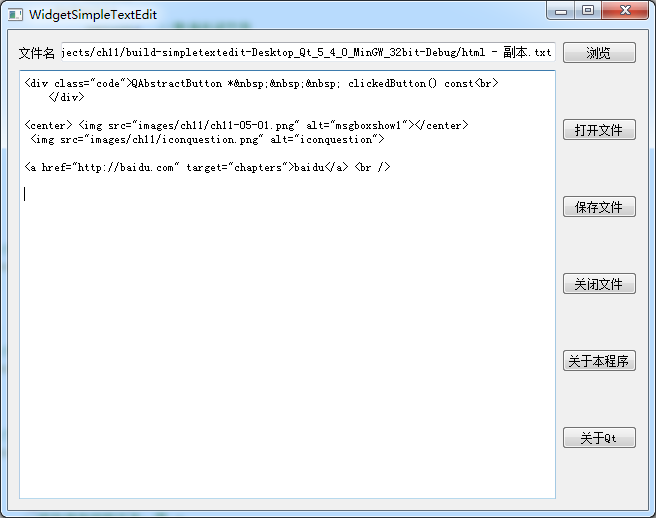
我们在编辑器修改一下文本，然后再点击“关闭文件”按钮，显示弹出如下：
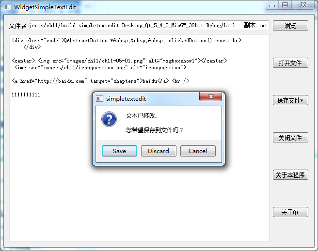
点击不同按钮，效果不同，Save 会保存文件后再关闭，Discard 会丢弃修改并关闭文件，Cancel 则放弃关闭文件的操作。
如果我们修改了文本编辑器，尚未保存，直接再点击“打开文件”按钮，
则会弹出显示是否保存消息框，如下图所示：
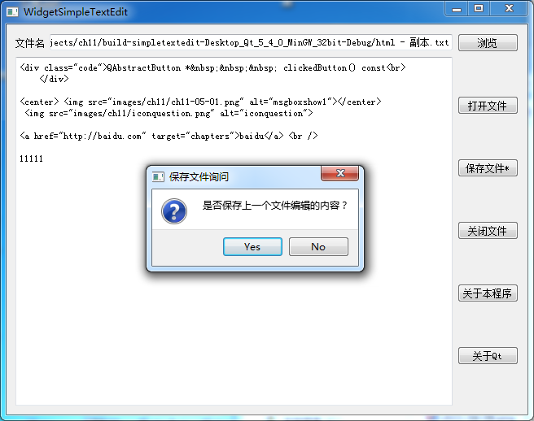
如果点击 Yes，程序先保存修改内容再打开新文件；如果点击 No，则放弃保存修改的内容，直接打开新文件。
其他功能请自行测试，这里不再逐一测试截图。下一小节我们学习向导对话框。
11.5.2 QWizard
向导对话框通常由多个子页面按照一定顺序先后呈现，目的是方便引导用户逐步设置一些内容。对于复杂的或不常用的、不方便用户理解的功能内容，通常可以用向导对话框逐步引导用户设置。像常见的软件安装向导、输入法设置向导，QtCreator 新建项目、新建子窗口类等都是向导对话框的应用。
QWizard 是向导对话框主窗口类，其基类是 QDialog ；向导对话框内部的子页面类为 QWizardPage，子页面的基类则是 QWidget 。多个子页面可以按先后顺序逐一呈现，也可以有多个分支、非顺序呈现。 QWizard 向导对话框通过 addPage() 函数逐个添加子页面，默认是点击 Next 按钮逐个打开子页面，也可以通过子页面的重载 QWizardPage::nextId() 函数改变后续页面的次序。
QWizard 向导对话框支持 4 种外观风格，分别是 ClassicStyle、ModernStyle、MacStyle、AeroStyle，常用的是 ModernStyle。典型 ModernStyle 向导对话框如下图所示：
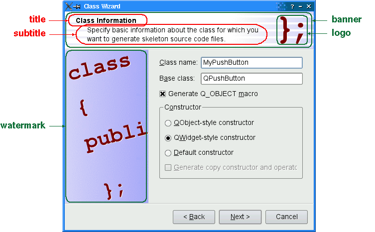
典型向导对话框组成如下：
● title：子页面标题，代表子页面功能。
● subtitle：子页面副标题，可以详细介绍当前子页面的功能。
● Pixmap：多种图片设置，包括 watermark 水印图、banner 横幅图、logo 标志图；MacStyle 风格可以设置 background 背景图。图片可以用 QWizard::setPixmap() 设置全局通用的图（每页都显示），也可以给每个子页面设置单独的图 QWizardPage::setPixmap()。
● Button：底部按钮，如 Back、Next、Cancel 等按钮，控制页面前后切换或退出对话框。
上面这些组成元素主要由 QWizard 负责显示和管理。
● QWizardPage 子页面控件区域就是除去上面内容的部分，如下图所示：
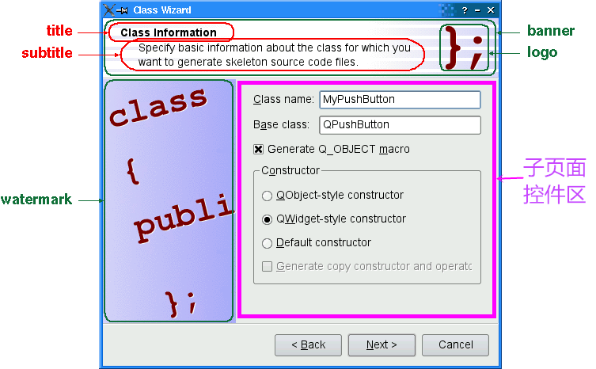
上图子页面控件区由标签控件、单行编辑器、复选框、分组框、单选按钮等组成。
对于 MacStyle 风格向导对话框，显示效果完全不同，如下图所示：
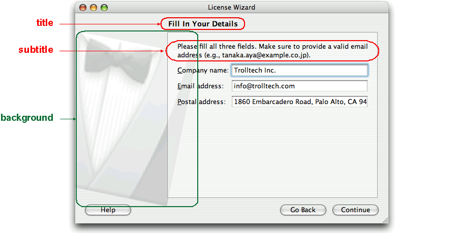
MacStyle 风格仅仅使用 background 背景图，其他图片没有用。上图 MacStyle 风格向导对话框的子页面控件只有三个标签控件和三个单行编辑器。
向导对话框为了方便多个页面之间共享控件数据，可以使用 QWizardPage::registerField() 将控件注册为 field 字段，例如：
ClassInfoPage::ClassInfoPage(QWidget *parent)
: QWizardPage(parent)
{
...
classNameLabel = new QLabel(tr("&Class name:"));
classNameLineEdit = new QLineEdit;
classNameLabel->setBuddy(classNameLineEdit);
baseClassLabel = new QLabel(tr("B&ase class:"));
baseClassLineEdit = new QLineEdit;
baseClassLabel->setBuddy(baseClassLineEdit);
qobjectMacroCheckBox = new QCheckBox(tr("Generate Q_OBJECT ¯o"));
registerField("className*", classNameLineEdit);
registerField("baseClass", baseClassLineEdit);
registerField("qobjectMacro", qobjectMacroCheckBox);
...
}
上述代码创建了 classNameLineEdit 编辑器、baseClassLineEdit 编辑器、qobjectMacroCheckBox 复选框，并注册为公共 field 字段，后续页面可以访问这些字段数据。
classNameLineEdit 对应 className 字段， * 星号代表强制填充字段，如果用户不填写该字段，对话框就不能点击Next，“强制填充”指的就是用户进行了合法的编辑，没有非法数据（非法指不符合数据验证器等），并且用户填充值要与 initializePage() 调用前的原始值不同。
baseClassLineEdit 对应 baseClass 字段，没有要求强制填充，可以为空。
qobjectMacroCheckBox 对应 qobjectMacro 字段，也没有要求强制填充。
在后续子页面，可以通过 field() 函数获取前面子页面的公共字段，例如：
void OutputFilesPage::initializePage()
{
QString className = field("className").toString();
headerLineEdit->setText(className.toLower() + ".h");
implementationLineEdit->setText(className.toLower() + ".cpp");
outputDirLineEdit->setText(QDir::toNativeSeparators(QDir::tempPath()));
}
上述代码获取公共 className 字段，并转换为字符串类型，并用该字符串初始化 headerLineEdit、implementationLineEdit 两个编辑框。
除了使用 * 星号设置强制填充字段影响点击下一步 Next 按钮，另一种做法是重载 QWizardPage::isComplete() 函数，在 isComplete() 函数内部检查数据填充情况，如果符合条件就返回 true，其他未填充情况返回 false。注意在子页面控件填充数据变动时，编写代码触发 QWizardPage::completeChanged() 信号。
当触发 QWizardPage::completeChanged() 信号时，子页面会重新执行 isComplete() 函数检查，这样才可能允许进入下一步。
要启用或禁用页面的 Next 或 Finish 按钮，还可以重载 QWizard::validateCurrentPage() 或者 QWizardPage::validatePage() 函数，用于检查本页面内容是否完成，验证返回 true ，才允许进行下一步。
下面我们详细学习 QWizard 类的函数。
（1）构造函数：
QWizard(QWidget * parent = 0, Qt::WindowFlags flags = 0)
~QWizard()
parent 是父窗口指针，如果是独立向导对话框，就是 NULL。flags 是窗口标志位，设置窗口功能样式，如 Qt::Widget、Qt::Window、Qt::Dialog等。
（2）子页面设置和访问函数：
int addPage(QWizardPage * page) //增加
void removePage(int id) //删除
void setPage(int id, QWizardPage * page) //设置 page 页面序号为 id 号
addPage() 将 page 页面添加为末尾序号的页面，并返回序号数值（新序号大于之前添加所有页面的序号）。
removePage() 根据 id 序号删除子页面，删除子页面时，如果有必要就会调用QWizard::cleanupPage(int id)函数清理子页面，
如果删除了开始页面，就会影响 startId 属性值。
setPage() 将 page 设置为指定序号 id 的页面，如果 id 序号之前有旧页面，旧页面会被删掉，替换为新的 page 页，该函数有可能隐蔽影响 startId 属性值。
可以根据序号 id 获取子页面指针：
QWizardPage * page(int id) const
如果序号合法，返回子页面指针，如果序号不合法，返回 NULL。
由于可以删除、修改页面序号，向导对话框的页面不一定是连续序号，可以通过下面函数获取合法的序号列表：
QList<int> pageIds() const
获取当前页面序号、当前页面指针使用如下函数：
int currentId() const
QWizardPage * currentPage() const
如果没有插入子页面，那么 currentId() 返回 -1，如果有子页面，currentId() 就是当前子页面的序号。
如果没有子页面，注意判断 currentPage() 返回值为 NULL。
在当前页，可以获取下一页的序号：
virtual int nextId() const
如果当前页没有下一页，nextId() 会返回 -1。QWizard::nextId() 默认会调用当前子页面的 QWizardPage::nextId() 函数获取下一页 id 。
向导对话框开始页面的序号默认是从 0 开始（如果没有 0 号就从最小序号开始），也可以手动设置：
void setStartId(int id) //设置开始页面
int startId() const //获取开始子页面，注意没有子页面时返回 -1
对子页面序号进行增加、删除、修改时，都有可能隐蔽影响到开始序号 id，为了保险起见，可以在添加、删除、修改完页面后，手动设置一下开始页面的序号。
针对非顺序的子页面访问情况，有些页面可能被跳过去，这时可以通过如下函数确定 id 序号的页面是否已经访问过：
bool hasVisitedPage(int id) const
该函数返回 true 时代表 id 序号页面访问过，返回 false 代表页面没有访问过。
如果想要知道目前所有访问过的页面序号，可以使用下面函数：
QList<int> visitedPages() const
针对当前页面，如果需要检查内容是否填充完毕，可以重载下面函数进行检查：
bool QWizard::validateCurrentPage()
当用户点击 Next 或 Finish 按钮时，QWizard 调用该函数进行本页面的最后检查，如果 validateCurrentPage() 函数返回 true，就进入下一页（或完成整个向导对话框），如果 validateCurrentPage() 返回 false，就继续留在本页面，不切换。 默认情况下，validateCurrentPage() 调用当前子页面的 QWizardPage::validatePage() 进行验证，所以重载子页面的 QWizardPage::validatePage() 函数也是一样的效果。
一般更推荐使用星号 * 强制填充字段来实现数据字段的检查，或者重载 QWizardPage::isComplete() 函数检查当前页面数据。
（3）子页面标题和副标题格式设置
title 和 subtitle 文字内容由子页面 QWizardPage 设置，但是显示格式由 QWizard 设置。
Qt::TextFormat titleFormat() const //获取子页面标题格式
void setTitleFormat(Qt::TextFormat format) //设置子页面标题格式
Qt::TextFormat subTitleFormat() const //获取子页面副标题格式
void setSubTitleFormat(Qt::TextFormat format) //设置子页面副标题格式
Qt::TextFormat 主要由三种：Qt::PlainText（纯文本）、Qt::RichText（丰富文本，html文本）、Qt::AutoText（自动检测，如果有 html 内容片段就是丰富文本，没有 html 片段就是纯文本）。
子页面标题和副标题格式会影响所有子页面。
（4）底部按钮设置
可以根据按钮枚举类型设置向导对话框的按钮文本：
QString buttonText(WizardButton which) const //获取按钮文本
void setButtonText(WizardButton which, const QString & text) //设置按钮文本
QWizard::WizardButton 枚举类型数值如下：
| 枚举常量 |
数值 |
描述 |
| QWizard::BackButton |
0 |
Back 后退按钮（Mac OS X 系统显示 Go Back） |
| QWizard::NextButton |
1 |
Next 下一步按钮（Mac OS X 系统显示 Continue） |
| QWizard::CommitButton |
2 |
Commit 提交按钮（提交后不能倒回本页面） |
| QWizard::FinishButton |
3 |
Finish 完成按钮（Mac OS X 系统显示 Done） |
| QWizard::CancelButton |
4 |
Cancel 取消按钮（如果启用NoCancelButton选项就没有该按钮 ） |
| QWizard::HelpButton |
5 |
Help 帮助按钮（启用HaveHelpButton选项，才会显示该按钮） |
| QWizard::CustomButton1 |
6 |
自定义按钮1（启用HaveCustomButton1选项，才会显示该按钮） |
| QWizard::CustomButton2 |
7 |
自定义按钮2（启用HaveCustomButton2选项，才会显示该按钮） |
| QWizard::CustomButton3 |
8 |
自定义按钮3（启用HaveCustomButton3选项，才会显示该按钮） |
| QWizard::Stretch |
9 |
特殊枚举值，没有按钮功能，只能用于按钮布局器里的空白占位 |
setButtonText() 根据指定按钮枚举值，设置相应按钮的文本。HelpButton 和 三个自定义按钮需要手动调用 QWizard::setOption(WizardOption option, bool on = true) 函数，设置启用才会显示。
稍后再介绍 WizardOption 向导对话框选项功能。
除了设置按钮文本，还可以获取按钮对象指针进行按钮的定制，
或者自行创建按钮设置为指定功能按钮：
QAbstractButton * button(WizardButton which) const
void setButton(WizardButton which, QAbstractButton * button)
button() 函数根据枚举值获取对应功能按钮对象指针，setButton() 则可以自己构建一个按钮，设置为指定功能的按钮。
按钮的显示也可以定制布局顺序和空白占位：
void setButtonLayout(const QList<WizardButton> & layout)
如果没有调用 setButtonLayout() 函数，按钮默认布局依赖 options() 选项取值，如果希望自己控制按钮的显示顺序，就可以调用 setButtonLayout() 函数实现，
例如：
MyWizard::MyWizard(QWidget *parent)
: QWizard(parent)
{
...
QList<QWizard::WizardButton> layout;
layout << QWizard::Stretch << QWizard::BackButton << QWizard::CancelButton
<< QWizard::NextButton << QWizard::FinishButton;
setButtonLayout(layout);
...
}
上述代码就是将底部左边设置为空白占位 QWizard::Stretch，然后靠右边依次显示 BackButton 、CancelButton、NextButton 、FinishButton。
（5）向导对话框选项设置
单个选项的读取和设置如下面函数：
bool testOption(WizardOption option) const
void setOption(WizardOption option, bool on = true)
testOption() 根据选项枚举值获取该选项是否启用，返回值就代表启用 true 或禁用 false。
setOption() 每次设置一个选项启用或禁用。
如果希望同时获取或设置所有选项值，那么使用下面函数：
WizardOptions options() const
void setOptions(WizardOptions options)
多个选项标志位用 | 或运算符同时启用。详细的选项标志位如下表所示：
| 枚举常量 |
数值 |
描述 |
| QWizard::IndependentPages |
0x00000001 |
多个子页面独立不继承数据，失去关联性，如果前进后退操作多次进入子页面，仅在第一次进入子页面执行 initializePage() 函数，而 cleanupPage() 函数则始终都不执行，慎用，可能造成前后页面数据不一致 |
| QWizard::IgnoreSubTitles |
0x00000002 |
不显示副标题，即使设置了副标题文本也不显示 |
| QWizard::ExtendedWatermarkPixmap |
0x00000004 |
将 WatermarkPixmap 图片填充满整个窗口，而不是仅显示在窗口左侧部分 |
| QWizard::NoDefaultButton |
0x00000008 |
不设置默认按钮，这样 Next 或 Finish 按钮就不会成为默认按钮 |
| QWizard::NoBackButtonOnStartPage |
0x00000010 |
开始页面不显示 Back 按钮 |
| QWizard::NoBackButtonOnLastPage |
0x00000020 |
最终页面不显示 Back 按钮 |
| QWizard::DisabledBackButtonOnLastPage |
0x00000040 |
将最终页面的 Back 按钮禁用 |
| QWizard::HaveNextButtonOnLastPage |
0x00000080 |
最终页面显示 Next 按钮，但该按钮默认是禁用的 |
| QWizard::HaveFinishButtonOnEarlyPages |
0x00000100 |
在非最终页面显示 Finish 按钮，但按钮默认是禁用的 |
| QWizard::NoCancelButton |
0x00000200 |
不显示 Cancel 按钮 |
| QWizard::CancelButtonOnLeft |
0x00000400 |
Cancel 按钮放在左边，是指放在 Back 按钮左边，而不是默认的在 Next 或 Finish 按钮右边 |
| QWizard::HaveHelpButton |
0x00000800 |
显示 Help 按钮 |
| QWizard::HelpButtonOnRight |
0x00001000 |
Help 按钮放在最最右边，而不是默认的显示在最最左边 |
| QWizard::HaveCustomButton1 |
0x00002000 |
显示定制按钮1 |
| QWizard::HaveCustomButton2 |
0x00004000 |
显示定制按钮2 |
| QWizard::HaveCustomButton3 |
0x00008000 |
显示定制按钮3 |
| QWizard::NoCancelButtonOnLastPage |
0x00010000 |
最终页面不显示 Cancel 按钮 |
根据系统平台不同，向导对话框的默认选项不同：
Windows 系统默认设置 HelpButtonOnRight 选项。
Mac OS X 系统默认设置 NoDefaultButton 和 NoCancelButton 选项。
X11 和 QWS (Qt for Embedded Linux) 系统默认选项为空。
我们可以自行设置需要的选项特性，例如，如果希望在最终页面禁用后退按钮、隐藏取消按钮，可以设置两个选项为 true：
MyWizard::MyWizard(QWidget *parent)
: QWizard(parent)
{
...
setOption(QWizard::DisabledBackButtonOnLastPage, true);
setOption(QWizard::NoCancelButtonOnLastPage, true);
...
}
（6）公共 field 字段访问和设置
注册公共 field 只能用子页面的 QWizardPage::registerField() 函数，QWizard 可以读取或修改字段：
QVariant QWizard::field(const QString & name) const
void QWizard::setField(const QString & name, const QVariant & value)
QWizard 可以读取或设置所有子页面的字段数值，读取的字段都是 QVariant 类型，要注意转换为实际的数据类型。如果 name 不是合法注册的字段名称，那么要注意处理返回的空值。
这里提前介绍一下子页面注册字段的函数：
void QWizardPage::registerField(const QString & name,
QWidget * widget, const char * property = 0, const char * changedSignal = 0)
name 是字段名称，widget 是字段输入的控件，property 如果为 0，就是注册默认属性为字段，changedSignal 如果为 0 就是默认属性的变动信号。向导对话框默认支持以下控件（包括派生类）和字段属性：
| 控件 |
属性 |
变动信号 |
QAbstractButton
（如复选框、单选按钮） |
bool checked |
toggled() |
| QAbstractSlider |
int value |
valueChanged() |
| QComboBox |
int currentIndex |
currentIndexChanged() |
| QDateTimeEdit |
QDateTime dateTime |
dateTimeChanged() |
| QLineEdit |
QString text |
textChanged() |
| QListWidget |
int currentRow |
currentRowChanged() |
| QSpinBox |
int value |
valueChanged() |
对于上面表格的控件、默认属性和默认变动信号，注册控件为公共字段时不需要填写 property 、changedSignal 这两个参数。
如果希望修改向导对话框范围内某个控件类的默认注册字段属性和变动信号，使用如下函数：
void QWizard::setDefaultProperty(const char * className, const char * property, const char * changedSignal)
className 是类名字符串，property 是新的默认注册字段属性，changedSignal 是字段属性的变动信号。
比如组合框 QComboBox 还有 currentText 属性和 currentTextChanged() 信号，如果希望修改向导对话框内所有子页面的组合框的默认注册字段属性，可以按照下面代码：
MyWizard::MyWizard(QWidget *parent)
: QWizard(parent)
{
...
//注册默认属性
setDefaultProperty("QComboBox", "currentText", "currentTextChanged");
...
}
在 setDefaultProperty 函数调用之后，再注册 QComboBox 对象的属性字段，就会将 currentText 作为默认的字段内容。
如果只是在一个子页面内，设置 QComboBox 对象的注册属性，那么只在 QWizardPage 派生类代码中调用 QWizardPage::registerField() 函数，例如：
FormPage0::FormPage0(QWidget *parent) :
QWizardPage(parent),
ui(new Ui::FormPage0)
{
ui->setupUi(this);
setTitle("Page0");
registerField("combox0", ui->comboBox, "currentText", "currentTextChanged");
}
（7）向导对话框外观风格
QWizard 有四种外观风格，用下面函数设置、获取外观风格：
void setWizardStyle(WizardStyle style)
WizardStyle wizardStyle() const
WizardStyle 枚举数值如下：
| 枚举常量 |
数值 |
描述 |
| QWizard::ClassicStyle |
0 |
经典 Windows 外观风格 |
| QWizard::ModernStyle |
1 |
现代 Windows 外观风格 |
| QWizard::MacStyle |
2 |
Mac OS X 外观风格 |
| QWizard::AeroStyle |
3 |
Windows Aero 外观风格 |
四种外观风格示例图如下：
● ClassicStyle
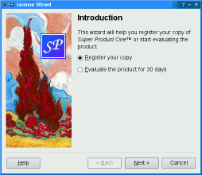
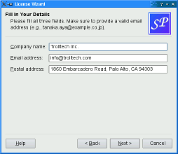
● ModernStyle
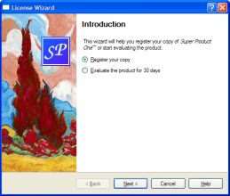
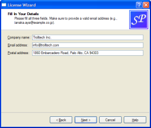
● MacStyle
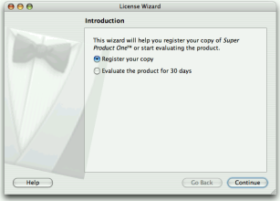
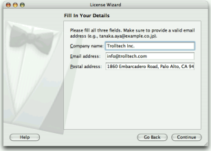
● AeroStyle
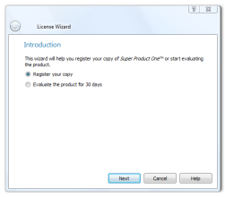
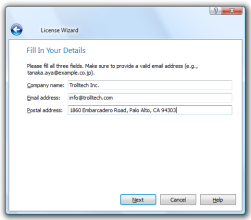
外观风格影响页面标题、副标题、图片、底部按钮和子页面控件显示位置和样式，可以根据实际需求设置外观风格。
AeroStyle 是 Windows Vista 及以上系统开启 Alpha 通道合成半透明效果的情况下使用，如果系统不支持就会倒退为 ModernStyle 风格。
（8）Pixmap图片设置
向导对话框根据不同的外观风格显示不同的图片元素，设置和获取图片函数如下：
void setPixmap(WizardPixmap which, const QPixmap & pixmap)
QPixmap pixmap(WizardPixmap which) const
WizardPixmap 枚举值如下：
| 枚举常量 |
数值 |
描述 |
| QWizard::WatermarkPixmap |
0 |
水印图片，ClassicStyle 和 ModernStyle 使用，显示在左边的竖条形图片 |
| QWizard::LogoPixmap |
1 |
标志图片，ClassicStyle 和 ModernStyle 使用，显示在顶部标题右边的小标志图片 |
| QWizard::BannerPixmap |
2 |
横幅图片，ModernStyle 使用，显示在顶部标题的背景图片 |
| QWizard::BackgroundPixmap |
3 |
背景图片，MacStyle 使用，显示在向导对话框左边的背景图片。 |
我们根据上表可以归纳四种外观风格使用的图片：
● ClassicStyle： 使用 WatermarkPixmap、LogoPixmap 图片。
● ModernStyle：使用 WatermarkPixmap、LogoPixmap、BannerPixmap 图片。
● MacStyle： 使用 BackgroundPixmap 图片。
● AeroStyle： 没有使用图片。
除了设置图片，ClassicStyle、ModernStyle 两种外观风格左边的水印图片上可以显示自定义的侧边控件，使用如下函数：
void setSideWidget(QWidget * widget)
QWidget * sideWidget() const //如果没设置侧边控件，返回值是 NULL
侧边控件默认是 NULL。注意侧边控件仅在 ClassicStyle、ModernStyle 两种外观风格启用，其他风格没用。
（9）槽函数、信号和其他
除了从基类继承的，QWizard 本级有如下槽函数：
void back() //Back后退按钮对应槽函数
void next() //Next下一步按钮对应槽函数
void restart() //重新回到开始页面，向导对话框启动时自动调用
这三个槽函数一般都是向导对话框自动调用，不需要处理。
除了从基类继承的，QWizard 本级有如下信号：
void currentIdChanged(int id) //当前页面变化触发信号，例如Back或Next按钮切换页面触发
void customButtonClicked(int which) //自定义按钮点击触发信号，which 指示是哪个按钮触发
void helpRequested() //Help帮助按钮点击触发信号
void pageAdded(int id) //新增页面时触发信号
void pageRemoved(int id) //删除页面时触发信号
customButtonClicked() 信号里面参数 which 就是代表点击的自定义按钮，取值可能是 QWizard::CustomButton1、QWizard::CustomButton2、QWizard::CustomButton3，根据触发情况编写自定义按钮功能代码。
helpRequested() 信号就是 Help 帮助按钮点击触发，一般弹出帮助信息窗口，帮助用户理解页面功能。
注意自定义按钮和帮助按钮需要设置选项启动才能看到，见上面 setOption() 、setOptions() 函数。
QWizard 另外还有两个可以重载的虚函数，用于初始化子页面、清空子页面：
virtual void cleanupPage(int id)
virtual void initializePage(int id)
initializePage() 根据 id 序号初始化子页面，比如点击 Next 按钮切换到该序号子页面时调用初始化页面函数，实际上该函数就是调用 id 序号子页面的 QWizardPage::initializePage() 函数。
cleanupPage() 根据 id 序号清空页面内容，点击 Back 按钮从该页面倒退，那么倒退前执行清空页面函数，实际上该函数就是调用 id 序号子页面的 QWizardPage::cleanupPage() 函数。
注意 QWizard::IndependentPages 选项设置时，Back 按钮不触发 cleanupPage() 函数，initializePage() 仅在该页面第一次显示时调用，后续不再调用。比如多次前进后退经过该页面，除了第一次，后面几次的前进后退就不触发 initializePage() 函数，在多次前进后退过程中可以保留子页面用户编辑的旧数据，但要注意前后页面之间数据的关联性，避免造成前后页面数据不一致。
QWizard::IndependentPages 选项设置时，如果 initializePage() 函数内部代码根据前面页面字段设置本页面数据，那么第一次进入本页面执行了 initializePage() 函数，而第二次、第三次等进入本页面时不触发 initializePage() 函数，没有调用 initializePage() 函数会导致前后页面数据失去关联性，就容易造成本页面数据与前面的对应数据不一致。
QWizard 除了自身的功能函数，还需要子页面 QWizardPage 类配合使用。下面介绍 QWizardPage 类的内容。
11.5.3 QWizardPage
QWizardPage 是向导对话框的子页面类，QWizardPage 的基类是 QWidget。向导对话框子页面可以直接用代码创建 QWizardPage 对象及其子控件，也可以使用 QWizardPage 派生类构建代码。
QWizardPage 默认有 title、subTitle、Pixmaps 等内容特性，这些文字和图片由 QWizard 向导对话框负责渲染显示。 可以用 QWizard::addPage() 或 QWizard::setPage() 将子页面添加给向导对话框。子页面的函数 wizard() 返回其所属的向导对话框指针。
对于 QWizardPage 派生类，可以使用下面五个重载虚函数实现定制的功能和行为：
- initializePage() 函数，在初始化页面时调用，当用户点击 Next 按钮进入新页面，新页面自动调用该函数初始化页面。如果希望从之前的页面获取数据，并根据获取的前面页面数据定制本页面控件，那么就需要重载并实现 initializePage() 函数。
- cleanupPage() 函数，点击 Back 按钮时，本页面使用该函数重置本页面内容，清空用户的修改，然后倒退回到前一页。这个函数会把页面字段数值重置到调用 initializePage() 函数之前的原始值。
- validatePage() 函数，当用户点击 Next 或 Finish 按钮时，调用该函数进行本页面的数据验证。这个函数经常用于对不完整输入和错误输入的校验弹窗提示。
- nextId() 函数，返回下一页的 id，用于创建非线性顺序的向导对话框，用户可以设置分支条件，根据页面不同输入情况跳转到不同的页面分支。
- isComplete() 函数，这个函数用于决定 Next / Finish 按钮应该启用还是禁用，如果你重载了 isComplete() 函数，那么一定要在其他地方，比如输入控件的变动信号对应槽函数里面，手动触发 completeChanged()，这个信号会调用 isComplete() 函数重新检查是否启用 Next / Finish 按钮。
通常 Next / Finish 按钮是互斥的，一个页面只能显示两者之一。如果 isFinalPage() 返回 true，那么显示 Finish 按钮，否则显示 Next 按钮。
默认情况下，只有当 nextId() 返回返回 -1 时， isFinalPage() 才会返回 true。如果你希望 Next 和 Finish 按钮都能在一个页面显示，比如处于“早结束”状态，可以在该页面调用 setFinalPage(true) 。对于适用早结束的页面，你可能需要设置 QWizard 向导对话框 HaveNextButtonOnLastPage 和 HaveFinishButtonOnEarlyPages 两个选项启用状态。
在很多向导对话框中，前面页面的内容可能影响后续页面的默认显示内容。为方便前后页面的数据交互通信，QWizard 提供 “field”字段机制，可以在子页面 registerField()注册一个控件属性值为公共字段 ，
后续页面可以访问该字段 field() 、setField()。
下面我们详细介绍 QWizardPage 的函数内容。
（1）构造函数
QWizardPage(QWidget * parent = 0)
~QWizardPage()
构造函数 parent 是父窗口，就是向导对话框的指针，当使用 QWizard::addPage() 或 QWizard::setPage() 函数添加子页面时，父窗口指针自动修改为该 向导对话框指针。
（2）标题、副标题、图片、底部按钮等显示元素
这些显示元素在子页面可以设置内容，但是都靠父窗口向导对话框进行渲染。
标题、副标题函数：
QString title() const
void setTitle(const QString & title)
QString subTitle() const
void setSubTitle(const QString & subTitle)
标题是本页面主要功能的简要名称，副标题是对本页面功能的详细描述。标题和副标题可以是纯文本，也可以是 HTML 丰富文本，向导对话框可以设置文本格式 setTitleFormat()、 setSubTitleFormat()，默认都是 Qt::AutoText，如果文本有 HTML 语句就显示丰富文本，否则显示为纯文本。
图片设置和访问函数如下：
QPixmap pixmap(QWizard::WizardPixmap which) const
void setPixmap(QWizard::WizardPixmap which, const QPixmap & pixmap)
QWizard 和 QWizardPage 都有这两个图片函数，参数是一样的意思，QWizard 图片函数是影响所有子页面的图片，QWizardPage 是针对本页面单独设置的显示图片。如果 QWizardPage 设置了图片，那么优先使用本页面的图片；如果 QWizardPage 没有设置图片，那么就用 QWizard 设置的全局图片。
关于底部按钮设置，QWizardPage 只能控制显示的文本内容：
QString buttonText(QWizard::WizardButton which) const
void setButtonText(QWizard::WizardButton which, const QString & text)
QWizardPage 可以根据按钮枚举值设置按钮显示文本，但不能控制按钮个数。按钮的个数和哪些按钮显示由 QWizard 的按钮函数和选项决定，参考前面 QWizard 的内容。
（3）可重载定制功能的虚函数
初始化页面函数：
virtual void initializePage()
向导对话框 QWizard::initializePage() 会调用该函数进行该页面显示前的初始化功能，QWizard::restart() 函数和 Next 按钮切换新页面时会触发该初始化函数，但有例外，如果 QWizard::IndependentPages 选项设置时，初始化函数仅在页面第一次显示时调用，如果通过前进后退按钮再次进入该页面，则不会调用页面初始化函数。
QWizardPage::initializePage() 默认没有任何操作，如果需要根据之前页面字段数据初始化本页面的控件，那么重载 initializePage() 函数编写功能代码，就是最好的选择。例如：
void OutputFilesPage::initializePage()
{
QString className = field("className").toString();
headerLineEdit->setText(className.toLower() + ".h");
implementationLineEdit->setText(className.toLower() + ".cpp");
outputDirLineEdit->setText(QDir::toNativeSeparators(QDir::tempPath()));
}
上面代码获取 "className" 类名字段数据，然后根据类名初始化两个编辑器控件。
与初始化对应的是清除页面函数：
virtual void cleanupPage()
当用户点击 Back 按钮时，在后退页面之前，在本页面调用该函数进行清空操作，清空本页面后，在退回到前一页，但有例外，QWizard::IndependentPages 选项设置时，清除函数就始终不调用。
QWizardPage::cleanupPage() 默认操作是将页面的字段数据重置为原始值，就是在 initializePage() 执行之前的原始值。
virtual bool validatePage()
验证页面函数是在用户点击 Next 或 Finish 按钮时，验证页面内容是否填充完整。如果该函数返回 true，进入下一页面，否则，仍停留在本页面。
默认的 validatePage() 函数实现就是返回 true。一般更推荐使用星号 * 强制填充字段或重载 isComplete() 进行页面内容校验。
星号 * 强制填充字段是自动检查输入控件的数据合法性，如果希望进行较为复杂的数据校验，可以通过重载下面函数，实现定制功能：
virtual bool isComplete() const
QWizard 会调用这个函数，决定当前页面的 Next 或 Finish 按钮应该启用还是禁用。
默认的 isComplete() 实现是：如果 * 强制填充字段已经合法填充，就返回 true，否则返回 false。
重载该函数时要注意两点：
① 在其他函数代码位置手动触发 completeChanged() 信号，例如输入控件的变动信号对应槽函数里触发，这样 completeChanged() 信号会重新调用 isComplete() 函数，重新判断是否启用 Next 或 Finish 按钮。如果不手动触发 completeChanged() 信号，进入页面禁用的 Next 按钮可能一直禁用，无法进入后续页面。completeChanged() 信号声明如下：
void completeChanged() //页面填充完成情况变化信号，配合 isComplete() 重载函数使用
② 在新重载的 isComplete() 函数里面调用基类函数 QWizardPage::isComplete() 确认强制字段填充完成。
默认添加给向导对话框子页面是按序号线性顺序显示的，如果需要跳转页面功能，那么重载下面函数：
virtual int nextId() const
向导对话框点击 Next 按钮时，QWizard::nextId() 会调用该函数获取下一页的 id，如果后续没有页面就返回 -1.
nextId() 函数默认返回比当前页面序号大的最小序号页面 id，没有就返回 -1。重载该函数，设置分支判断条件，就可以创建非线性顺序的页面切换，例如：
int IntroPage::nextId() const
{
if (evaluateRadioButton->isChecked()) {
return LicenseWizard::Page_Evaluate;
} else {
return LicenseWizard::Page_Register;
}
}
上面代码判断，如果选中了评估版软件安装复选框，就进入评估版安装界面，否则进入注册页面。
（4）提交页面和最终页面设置
提交页面设置和访问函数如下：
void setCommitPage(bool commitPage)
bool isCommitPage() const
Commit 提交的意思是，本页面完成提交，进入下一页后，无法再返回本页面，下一页的 Back 按钮是禁用的。Commit 就是不能反悔的意思，本页提交了就无法再修改了，比如向导对话框里软件已经安装完了，就不能再回头。设置本页面为提交页面后，本页面的 Next 按钮会替换为 Commit 按钮，点击功能类似，但是下一页的 Back 按钮会禁用。
最终页面的设置和访问函数如下：
void setFinalPage(bool finalPage)
bool isFinalPage() const
一般情况下最大序号的页面是最终页面。
如果调用了 setFinalPage(true) ，那么 isFinalPage() 会返回 true，当前页面会显示 Finish 按钮，当 isComplete() 返回 true，就会启用 Finish 按钮，否则禁用 Finish 按钮。
如果调用了 setFinalPage(false)， isFinalPage() 函数会根据 nextId() 返回值确定自身的返回值：如果 nextId() 返回 -1，那么 isFinalPage() 函数返回 true，否则返回 false。例如，如果在序号最大的页面调用 setFinalPage(false)，这一页本来就是最终页面，nextId() 返回 -1， setFinalPage(false) 就不会生效。
一般不需要手动设置最终页面，如果涉及到早结束页面情况，设置 QWizard::HaveFinishButtonOnEarlyPages 选项，希望早点结束向导，才会主动设置最终页面。
（5）Protected 声明的保护继承函数
主要是获取隶属的向导对话框函数和字段操作函数：
QWizard * wizard() const
QVariant field(const QString & name) const //获取字段数据
void setField(const QString & name, const QVariant & value) //手动设置字段数据
wizard() 返回本页面隶属的向导对话框指针，如果本页面还未添加给向导对话框，返回 NULL。
field() 根据字段名称获取字段数据，返回值是 QVariant ，要注意转化为需要的数据再使用。
setField() 函数是手动设置指定字段的数据，一般较少使用，都是注册字段控件的属性自动更新字段数据。
void registerField(const QString & name, QWidget * widget, const char * property = 0, const char * changedSignal = 0)
registerField() 注册字段函数只有子页面有，将子页面控件注册为指定名称的字段（字段名称必须唯一），控件对应字段的默认属性详见上面 QWizard 字段函数内容。如果希望控件的其他属性作为注册字段，那么指定参数 property 属性字符串和 changedSignal 变动信号字符串，就可以用指定属性作为注册字段数据，例如：
registerField("combox0", ui->comboBox, "currentText", "currentTextChanged");
上面一行代码就是将 currentText 属性注册为字段数据，currentTextChanged 是属性变动信号的名字，使用变动信号名称即可，不用带信号的括号和参数。
注册字段时，字段名末尾带一个信号 * 代表强制填充字段，例如：
registerField("className*", classNameLineEdit);
星号 * 强制填充，完成填充的判断条件是，检查控件当前值与原始值（initializePage() 函数调用之前的属性值）是否一致，如果不一致就判定完成填充。对于 QLineEdit 等可以设置验证器、输入模板的输入类控件，强制填充会同样检查输入控件的 hasAcceptableInput() 返回值，只有通过了数据验证器或输入模板验证，输入数据合法，才会视为完成数据填充。强化填充完成后，才会启用页面的 Next 按钮或 Finish 按钮。
星号 * 强制填充字段的检查是在 QWizardPage::isComplete() 函数实现，如果重载了 isComplete() 函数，在新类的 isComplete() 函数如果不调用基类 QWizardPage::isComplete() 函数，那么会跳过强制属性检查。
QWizard 和 QWizardPage 类的内容介绍到这，下面通过一个软件安装向导的例子学习向导对话框的使用。